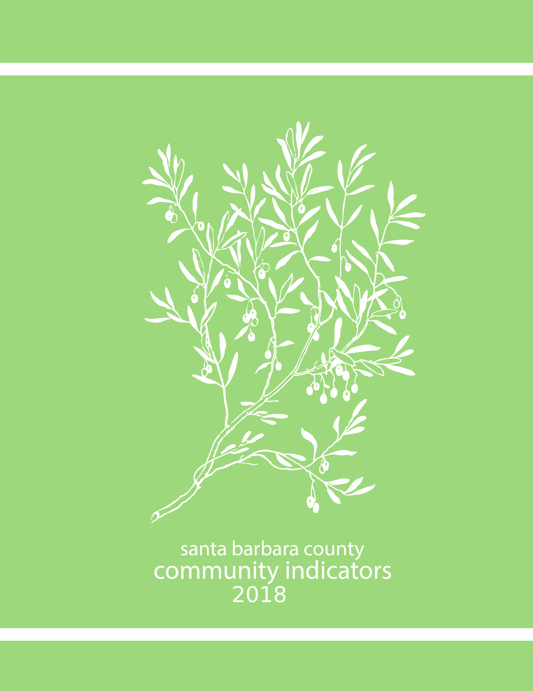

UCSB Economic Forecast Project

Dear Residents,
We are pleased to present the 2018 edition of the Santa Barbara Community Indicators Project (SBCIP). This is a revival of the South Coast Community Indicators Project that ran for six editions from 1998 to 2003. The Santa Barbara Community Indicators Project incorporates both North County and the South Coast in its measures, and is designed to give an overall picture of our community’s health and well-being.
This project was made possible through the financial support provided by the Hutton-Parker Foundation, the Mosher Foundation, Montecito Bank & Trust, and the Gretler Foundation.
The Santa Barbara Community Indicators Project focuses on social, environmental, and economic data within our community. The quality of our lives is a reflection of the balance of social, environmental, and economic conditions. We encourage our community to engage with us to discover ways in which we can continually improve our health, safety and environment.